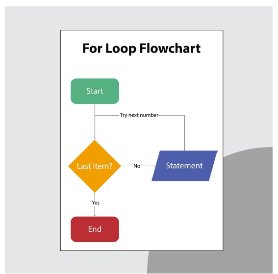
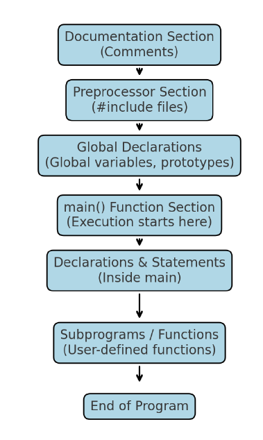

Ad Space
C is a structured programming language because it provides functions that enable us to break the code into small, manageable parts. This makes C programs easier to understand and modify. Functions also offer code reusability.
A flowchart is used in problem-solving to represent the logical sequence of steps in a program using standard symbols. This visual representation makes the program's logic easier to understand, analyze, and debug.

| Break Statement | Continue Statement |
|---|---|
| Used to terminate the loop or switch statement immediately. | Used to skip the current iteration and continue with the next iteration of the loop. |
| Control transfers to the first statement after the loop/switch. | Control transfers back to the loop condition for re-evaluation. |
| Example: Exits the loop when a certain condition is met. | Example: Skips printing a value and goes to the next loop cycle. |
| Commonly used in switch and loops. | Only used in loops. |

The main parts of a C program are:
#include <stdio.h>.Code Example:
#include <stdio.h> // Preprocessor Directive
int main() // Main Function
{
// Declarations & Statements
printf("Hello, World!\n"); // Example statement
// Return Statement
return 0;
}The purpose of format specifiers is to tell the compiler what type of data is being read from the user (in scanf()) or printed to the screen (in printf()).
%d → integer%f → float%c → characterA programming paradigm is the fundamental style of computer programming. It determines how problems are solved and how solutions are represented in code.
Types:
Keywords are reserved words in C that have a predefined meaning and purpose. They cannot be used as identifiers (like variable or function names) because they are part of the C language syntax.
Example: int, float, if, while, return
Ad Space